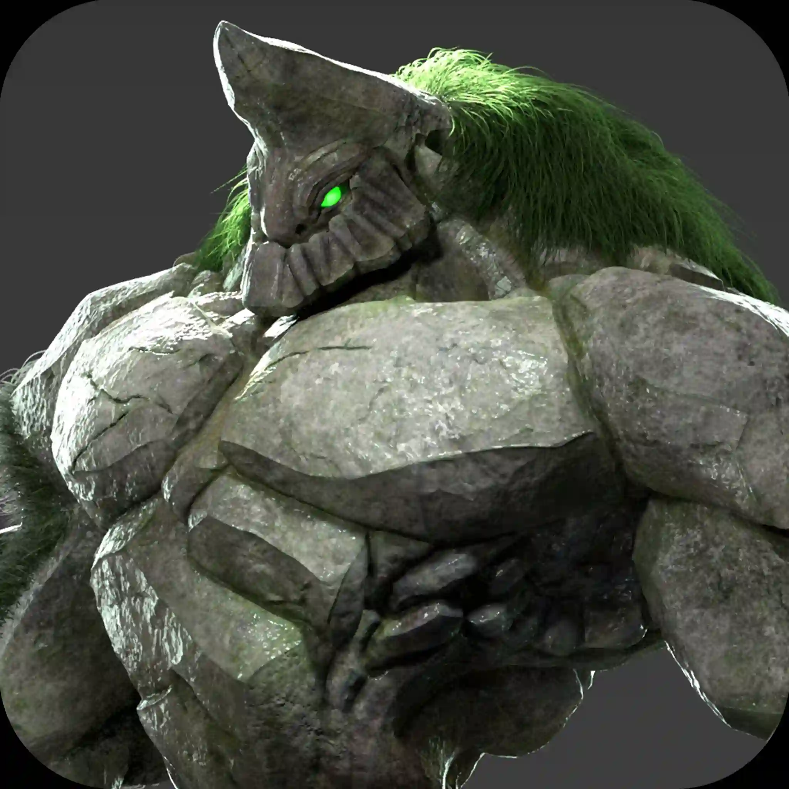

ENGLISH:
I’m Esteban Campos Polo, a multidisciplinary visual creator with over 20 years of professional experience in graphic design, branding, and commercial photography, and specialized training in 3D character modeling for film and video games.
My career began in graphic and advertising design, where I directed creative departments and led branding and packaging projects across sectors such as fashion, retail, and toys. I developed campaigns for franchises and national brands, combining technical expertise with artistic vision to deliver impactful visual identities. I’ve also worked extensively in product photography, art direction, and prepress processes, ensuring production-ready materials across digital and print platforms.
Driven by continuous learning and a deep passion for character design, I completed advanced training at Animum Creativity Advanced School, where I specialized in 3D character creation using ZBrush, Autodesk Maya, and Substance Painter. My education covered the full 3D production pipeline: from stylized and realistic sculpting to retopology, UV mapping, PBR texturing, and rendering with Autodesk Arnold, as well as model optimization for real-time engines such as Unity 3D.
During this period, I produced high-quality demo reel pieces under the mentorship of renowned professionals such as Juan Solís, David Rodríguez de la Orden, and Andrés Fabián López. My works were recognized at The Rookies 2023 Draft, where I was a finalist, reflecting my technical proficiency and artistic sensitivity.
My 3D work emphasizes anatomical accuracy, clean topology for animation, and collaborative iteration with riggers and concept artists to refine every aspect of the character. I am adept at problem-solving, quick to adopt new tools, and meticulous in achieving visual and technical excellence.
Today, I merge my background in design with my expertise in 3D to deliver visually compelling and technically sound creative solutions. Whether you're looking for a character artist for cinematic projects or a designer to elevate your brand’s visual language, I bring both depth and versatility to the table.

ESPAÑOL:
Soy Esteban Campos Polo, creador visual multidisciplinar con más de 20 años de experiencia profesional en diseño gráfico, branding y fotografía comercial, y formación especializada en modelado 3D de personajes para cine y videojuegos.
Comencé mi carrera en diseño gráfico y publicitario, donde dirigí departamentos creativos y lideré proyectos de branding y packaging en sectores como la moda, el retail y el juguete. Desarrollé campañas para franquicias y marcas nacionales, combinando técnica y visión artística para ofrecer identidades visuales impactantes. También he trabajado ampliamente en fotografía de producto, dirección de arte y procesos de preimpresión, garantizando materiales listos para producción en medios digitales e impresos.
Impulsado por el aprendizaje constante y una profunda pasión por el diseño de personajes, cursé formación avanzada en Animum Creativity Advanced School, especializándome en creación de personajes 3D con ZBrush, Autodesk Maya y Substance Painter. Me formé en todo el pipeline de producción 3D: desde esculpido estilizado y realista hasta retopología, mapeado UV, texturizado PBR y renderizado con Autodesk Arnold, así como en optimización para motores en tiempo real como Unity 3D.
Durante este periodo produje piezas de calidad demo reel bajo la tutoría de reconocidos profesionales como Juan Solís, David Rodríguez de la Orden y Andrés Fabián López. Mis trabajos fueron reconocidos en The Rookies 2023 Draft, donde fui finalista, reflejando mi dominio técnico y sensibilidad artística.
Mi trabajo en 3D se enfoca en precisión anatómica, topología limpia para animación y colaboración fluida con riggers y concept artists para pulir cada detalle del personaje. Soy resolutivo, rápido en adoptar nuevas herramientas y meticuloso en lograr excelencia visual y técnica.
Actualmente, combino mi trayectoria en diseño con mis competencias en 3D para ofrecer soluciones creativas sólidas y visualmente atractivas. Ya sea como artista de personajes para proyectos cinematográficos o como diseñador para potenciar el lenguaje visual de tu marca, aporto profundidad y versatilidad a cada desafío.